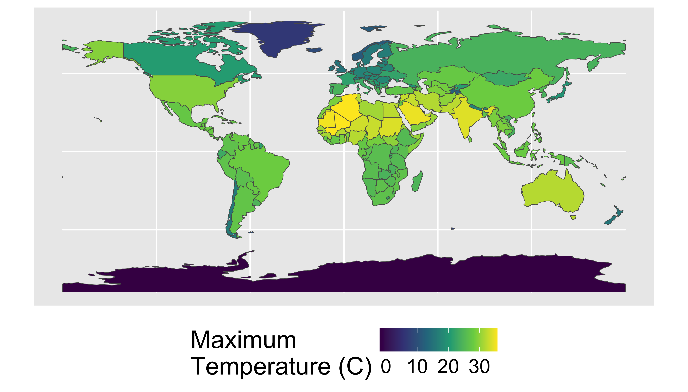

Find hottest country on each continent
Use sf and raster to quantify mean annual temperature for each country and then identify the hottest one on each continent.
Reading
- Raster Vector Interactions GCR
Background
The raster data format is commonly used for environmental datasets
such as elevation, climate, soil, and land cover. We commonly need to
extract the data from raster objects using simple features
(vector objects). For example if you had a set of points you collected
using a GPS and wanted to know the mean annual temperature at each
point, you might extract the data from each location in a
raster-based map of temperature.

You could also be interested in some summary of the raster data across multiple pixels (such as the buffered points above, a transect, or within a polygon). For example, you might be interested in the mean elevation within the entire polygon in the above figure.
In this case study we’ll work with a HadCRUT temperature data from the Climatic Research Unit at the University of East Anglia. These are near-global rasters of surface temperature on a five degree grid.
Objective
Identify the hottest country on each continent (not counting Antarctica) by intersecting a set of polygons with a raster image and calculating the maximum raster value in each polygon.
Tasks
- Calculate annual maximum temperatures from a monthly spatio-temporal dataset
- Remove Antarctica from the
worlddataset - Summarize raster values within polygons
- Generate a summary figure and table.
- Save your script as a .R or .Rmd in your course repository
Download starter R script (if desired). Save this directly to your course folder (repository) so you don’t lose track of it!
The details below describe one possible approach.
Libraries
You will need to load the following packages
library(raster)
library(sp)
library(spData)
library(tidyverse)
library(sf)Loading the spData() package may return a warning:
To access larger datasets...install spDataLarge.... This is
not required - you can use the standard lower resolution files and
safely ignore this message.
Data
Download the mean annual temperatures over the reference period 1961-1990 Climatic Research Unit data (CRU) here. Absolute temperatures for the base period 1961-90 on a 5° by 5° grid. Download these data in netcdf format using the code below:
library(ncdf4)
download.file("https://crudata.uea.ac.uk/cru/data/temperature/absolute.nc","crudata.nc")
tmean=raster("crudata.nc")Note: If the above code returns an error about
nc_open(), try adding method="curl" at the end
of the download.file() command.
Steps
- Prepare country polygon data (the
worldobject).- Remove “Antarctica” with
filter()because WorldClim does not have data there. - Convert the
worldobject tospformat (the ‘old’ format) because therasterpackage doesn’t acceptsfobjects. you can do this withas(world,"Spatial").
- Remove “Antarctica” with
- Prepare Climate Data
- Download and load the CRU data using the code above
(
tmean=raster("crudata.nc")). - Inspect the new
tmeanobject (you can start by just typing it’s nametmean, then perhaps making aplot()). How many layers does it have? What do these represent? You can read more about the data here - The CRU data are stored as degrees C.
- Use
names(tmean)to see the current name of the data layer. Then, update it to ‘tmean’ by runningnames(tmean)<- "tmean"make the later code more intuitive than keeping the default nameCRU_Global_1961.1990_Mean_Monthly_Surface_Temperature_Climatology.
- Download and load the CRU data using the code above
(
- Calculate the maximum temperature observed in each country.
- use
raster::extract()to identify the maximum temperature observed in each country (fun=max). Also setna.rm=T, small=T, sp=Tto 1) handle missing data along coastlines, 2) account for small countries that may not have a full 0.5 degree pixel in them, and 3) return a spatial polygon object instead of just a vector of values. - convert the results of the previous step to
sfformat withst_as_sf(). Now you have an updated polygon object with a new column of maximium temperature. Cool! - save this spatial feature as
tmax_country.
- use
- Communicate your results
- use
ggplot()andgeom_sf()to plot the maximum temperature in each country polygon (not the original raster layer). To recreate the image below, you will also need+scale_fill_viridis_c(name="Annual\nMaximum\nTemperature (C)"). Note the use of\nto insert a line break in the text string. You can move the legend around with+theme(legend.position = 'bottom'). - use
dplyrtools to find the hottest country in each continent. You may needgroup_by()andtop_n. To create a nice looking table, you may also want to useselect()to keep only the desired columns,arrange()to sort them,st_set_geometry(NULL)to drop the geometry column (if desired). Save this table ashottest_continents.
- use
Your final result should look something like this:

And the summary table will look like this:| name_long | continent | tmean |
|---|---|---|
| Australia | Oceania | 32.0 |
| Somalia | Africa | 27.7 |
| Paraguay | South America | 27.7 |
| Timor-Leste | Asia | 27.6 |
| Costa Rica | North America | 26.1 |
| Albania | Europe | 12.5 |
| French Southern and Antarctic Lands | Seven seas (open ocean) | 7.1 |
Note that these data are based on 0.5 degree resolution data and thus will miss small hot places and cannot be directly compared with station-based data.
Build a leaflet map of the same dataset.